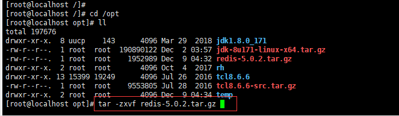
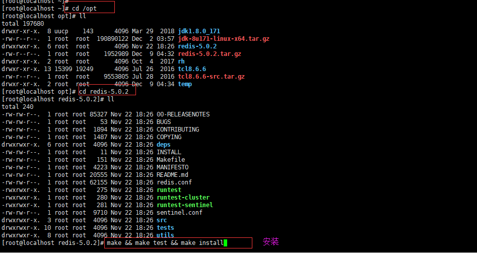

本次安装的redis版本是5.0.2
第一步：安装gcc
yum -y install gcc gcc-c++
第二步：安装tcl
yum install wget
cd /opt
wget http://downloads.sourceforge.net/tcl/tcl8.6.6-src.tar.gz
tar -zxvf tcl8.6.6-src.tar.gz
cd /opt/tcl8.6.6/unix
./configure
make
make install
第三步：下载Redis源码包、上传到服务器中（一般是/opt目录下）、解压缩
下载Redis有两种方法：
第一种方法：在官网上直接下载tar.gz包，然后上传到linux服务器中
第二种方法：直接在linux服务器中通过wget命令下载tar.gz包到服务器（如：wget http://download.redis.io/releases/redis-5.0.2.tar.gz）
解压缩

第四步：安装redis

注意：make test是可选的，通常情况下并不需要make test
第五步：验证redis是否安装成功
第六步：将redis添加到系统服务并设置开机自启动